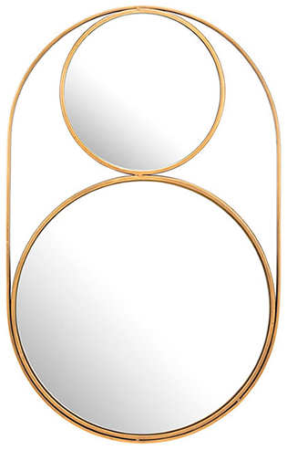

Couleur : or
Forme : rond
Style : ce miroir appelé « Capsule » se décompose en deux parties : un petit cercle surmontant un plus grand. Ceux-ci sont unis par une fine tige ovoïde.
Époque : contemporain
Cadre : le cadre est en métal doré.
Hauteur : 66 cm
Largeur : 41 cm
Date d’acquisition : 2017-04-01
Moyen d’acquisition : achat
Prix d’achat : 62 €
En mai 2020, le prix du miroir était de 92 $CAN (62 €).
Ce miroir aurait avantage à être placé dans une pièce lumineuse, pour l’éclat de son cadre doré.